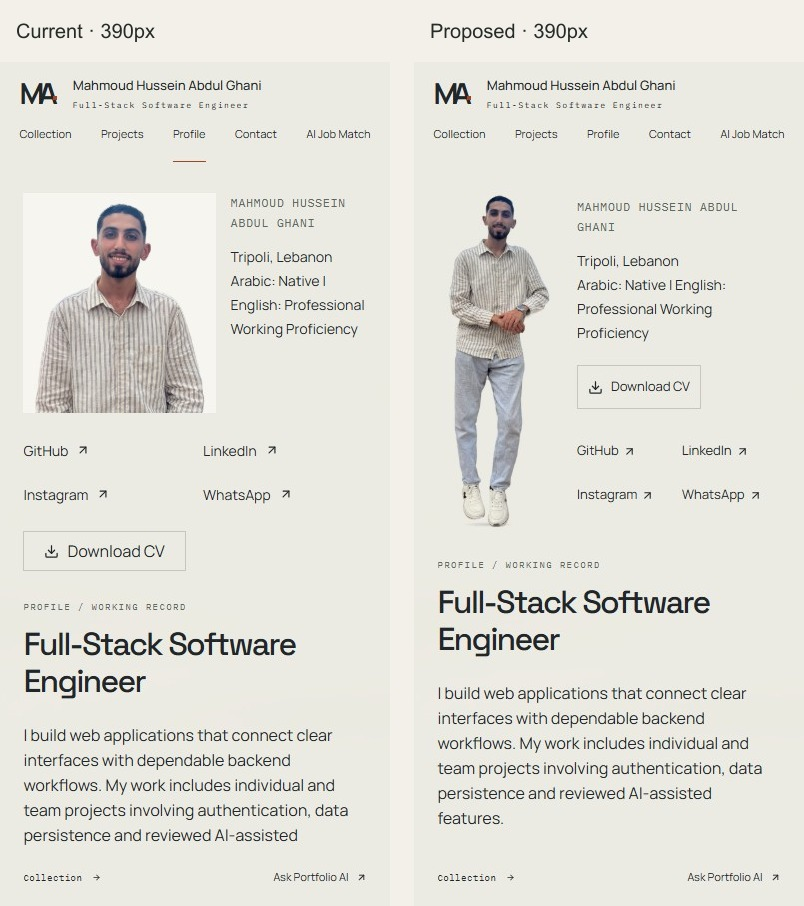
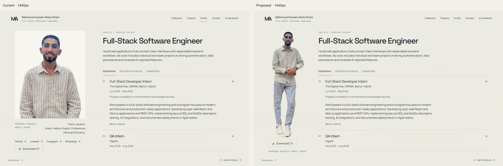
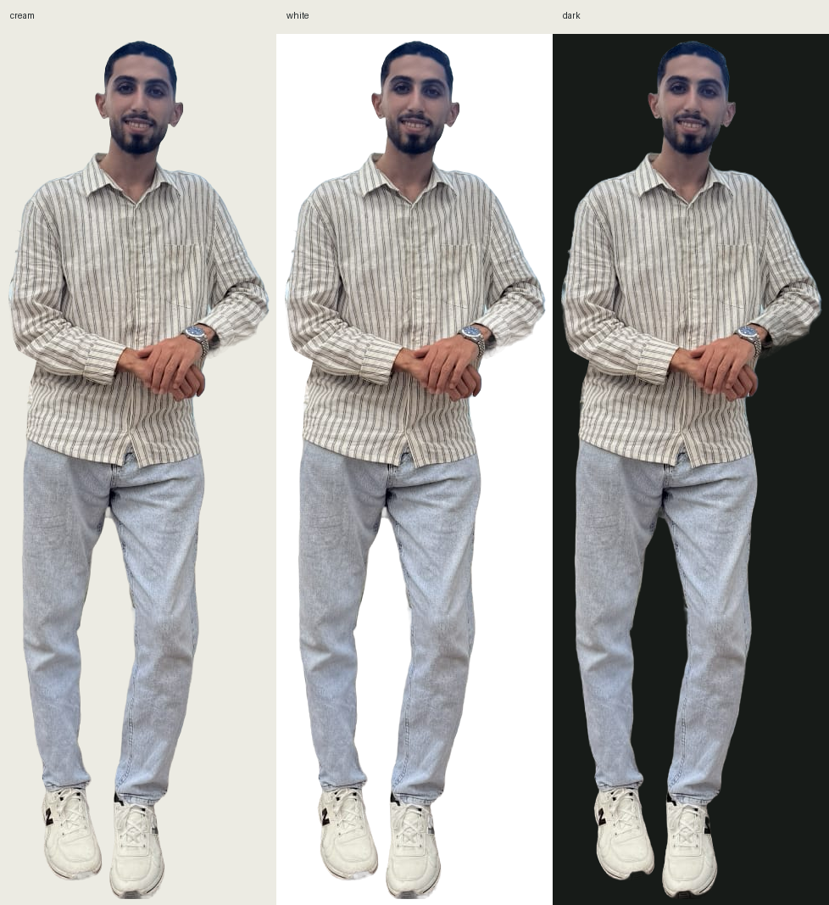
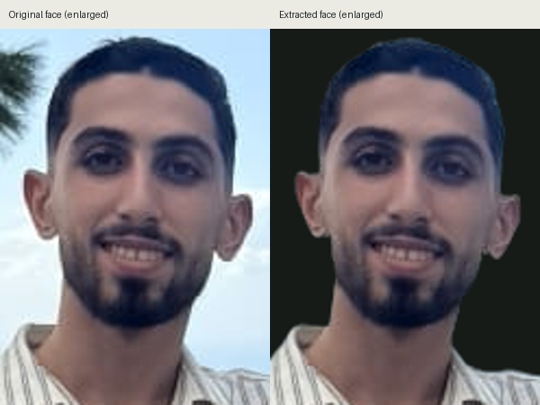

Profile portrait prototype
Static portrait review: original photographic pixels, a larger complete figure and a single brief entrance. The production Profile remains unchanged. Speaking and gestures are still outstanding.
Current Profile · Interactive review prototype · Download comparison package
This page belongs to the named Vercel Preview build, not the production domain. Preview authentication still applies. Noindex controls indexing; it does not restrict access.
390px — current / proposed

1440px — current / proposed

Alpha inspection — cream / white / dark

Likeness — original / extracted (enlarged for inspection)

Extracted PNG · Lossless WebP · Browser validation


Loading state · Image failure fallback · Changed files


The 326×1027 crop limits face detail. Enlarging its display does not recover original detail. See design-qa.md and video production requirements and options.